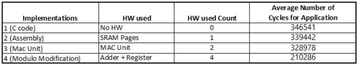

using PSoC
The goal of the project is to accelerate the encryption and decryption process of International Data Encryption Algorithm. The way we achieved it was by performing hardware-software partitioning.
Using a general purpose computer is fine for encrypting small data. However when there are large amount of data, process tend to take long time to complete due to heavy computation. This is were the partitioning comes in. By processing the computational heavy code blocks in hardware circuit, the encryption/decryption process can be accelerated significantly.
First, the algorithm was implemented and ran on a Programmable System on Chip(PSoC). Using a timer circuit, the number of clock cycles taken to encrypt/decrypt a block of text was calculated. Multiple implementation was done the most of optimal one out of them was found. In doing so, the number of CPU clock cycles took to encrypt/decrypt the same text block was reduced by 31.32%.
Including me, 3 people worked on this project. Languages used were Assembly, C, and C++. LCD was used for displaying purposes. IDEA was performed on Cypress's PSoC1.